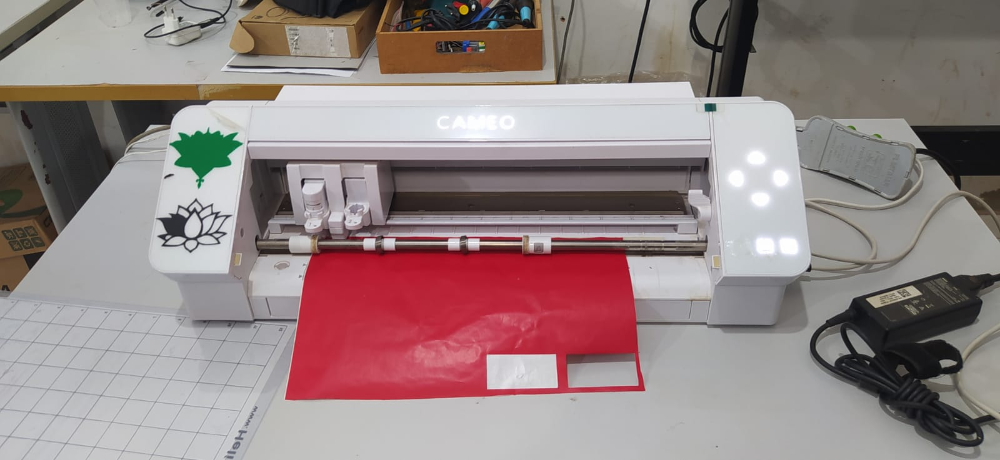
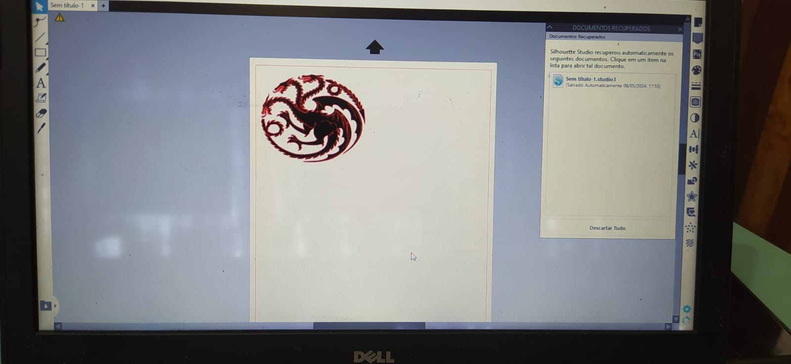
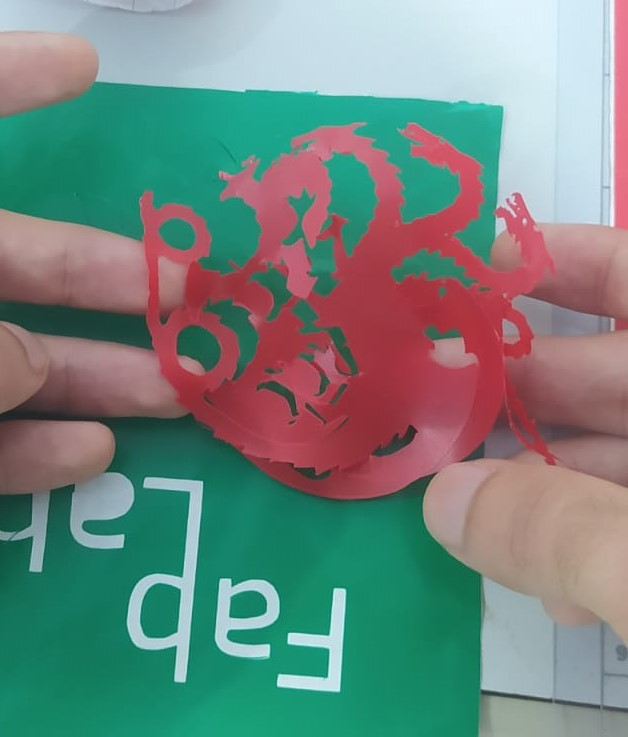

Capítulo 10 Plotter
10.1 Teoria
Uma plotter é uma impressora especializada utilizada principalmente para a produção de gráficos de grandes dimensões, como plantas arquitetônicas, mapas, gráficos de engenharia e sinalizações. Diferente das impressoras tradicionais, as plotters desenham linhas contínuas em vez de pontos individuais, o que lhes permite produzir desenhos com alta precisão e detalhes finos.
As primeiras plotters, desenvolvidas nos anos 1950 e 1960, utilizavam braços mecânicos para movimentar canetas sobre o papel. Com o avanço da tecnologia, surgiram plotters de jato de tinta e a laser, que substituíram as canetas por cabeçotes de impressão e feixes de laser, respectivamente.
Existem vários tipos de plotters, cada um com suas características específicas. A plotter de caneta, também conhecida como plotter vetorial, usa uma caneta para desenhar no papel, movendo-se ao longo dos eixos X e Y. Este tipo é ideal para desenhos de linhas, como plantas arquitetônicas e diagramas técnicos, oferecendo alta precisão e capacidade de criar desenhos detalhados, embora a velocidade de impressão seja relativamente lenta.
A plotter de jato de tinta, ou raster, utiliza cartuchos de tinta para pulverizar tinta sobre o papel, semelhante a uma impressora a jato de tinta convencional, mas em maior escala. Esse tipo pode imprimir em cores e é mais rápido que a plotter de caneta, embora ofereça menor precisão em desenhos vetoriais.
A plotter de corte, em vez de desenhar, utiliza uma lâmina para cortar materiais como vinil, papelão e tecido. Este tipo é amplamente usado na fabricação de adesivos, decalques e sinalizações, mas é limitado a tarefas de corte e não pode imprimir.
Já a plotter a laser usa um feixe de laser para desenhar ou cortar materiais, sendo altamente precisa e rápida, capaz de trabalhar com materiais mais duros. No entanto, é mais cara e requer manutenção especializada.
Os componentes principais de uma plotter incluem a cabeça de impressão/corte, que realiza o desenho ou corte; os eixos de movimento (X e Y), responsáveis pelo movimento da cabeça de impressão/corte sobre o material; a superfície de impressão/corte, onde o material é colocado; e o controlador eletrônico, que interpreta os comandos enviados do computador e move a cabeça de impressão/corte de acordo.
As plotters são usadas em diversas indústrias devido à sua capacidade de produzir gráficos de grandes dimensões com alta precisão. Na arquitetura e engenharia, são usadas para imprimir plantas, diagramas técnicos e mapas. Na publicidade e design gráfico, produzem banners, cartazes e sinalizações. Na moda e têxtil, são usadas para cortar padrões em tecido e outros materiais. Na automotiva e manufatura, ajudam na criação de protótipos e peças personalizadas.
As principais vantagens das plotters incluem alta precisão e qualidade de impressão/corte, capacidade de trabalhar com grandes formatos e versatilidade para diversas aplicações e materiais. No entanto, elas também apresentam desvantagens, como custo elevado de aquisição e manutenção, necessidade de espaço físico significativo e necessidade de operadores treinados para manuseio e manutenção adequada.
As plotters são ferramentas essenciais em muitos setores devido à sua capacidade de produzir gráficos detalhados e de grande escala. Com a evolução tecnológica, tornaram-se mais versáteis e eficientes, atendendo a uma ampla gama de necessidades industriais e comerciais.
10.2 Prática
A figura 23 mostra a plotter que foi utilizada para prática da atividade. 
Na figura 24, o software que faz a comunicação com a plotter, juntamente com o desenho proposto que foi usado para teste.

E na figura 25, pode-se observar o resultado do corte da plotter.
